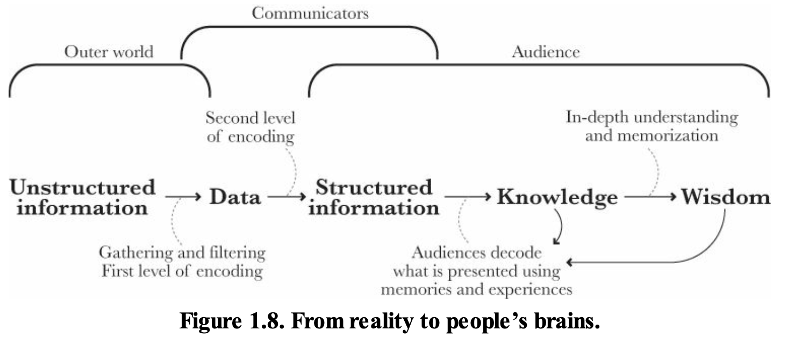
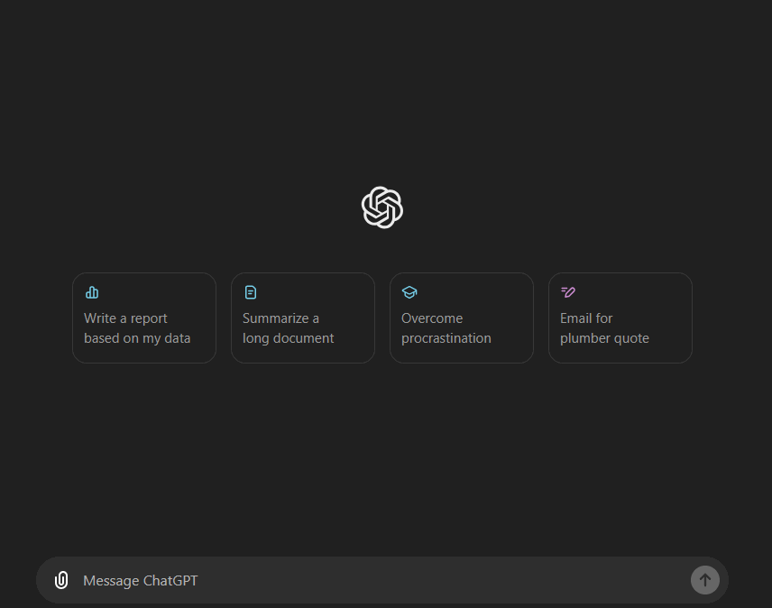
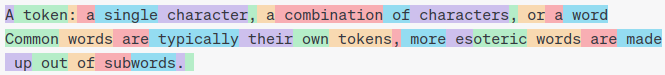
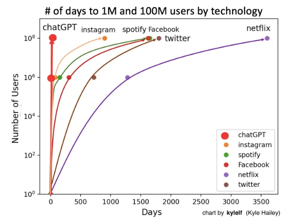
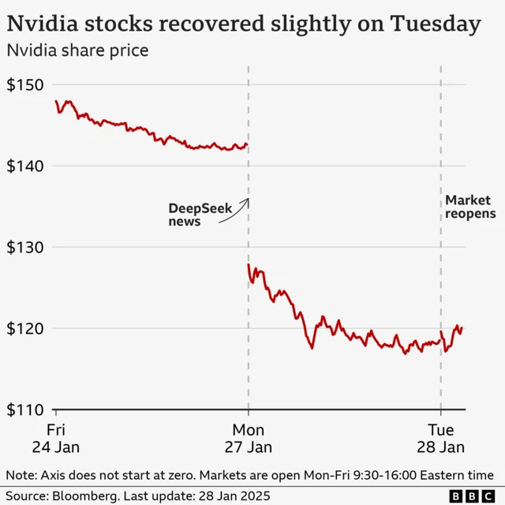

Lecture 1: Data-Driven Decisions in Marketing
STA1000 - Data Analytics and Metrics
Damien Dupré
Welcome
STA1000 - Data Analytics and Metrics…
- Is a 10 ECTS module in the MSc in Digital Marketing
- Lectures scheduled 2hrs per week, every week (except specific days)
- Includes 1hr tutorial per week from week 8 to week 11
You will learn …
- How to visualise marketing data in online dashboards
- How to process marketing data with python
- How to use actionable marketing metrics to drive insights and decisions
About Me
Since 2019, I have been teaching Data Analytics and Statistics at DCU Business School.

Assessment Structure
Mid November
- Assignment 1: Tableau Online Dashboard (25%)
End November
- Inclass test 1 at the last lecture of Semester 1 (25%)
Mid April
- Assignment 2: Website + Analytics Report (25%)
End April
- Inclass test 2 at the last lecture of Semester 2 (25%)
1. Data, Information and Analytics
Data vs. Information
Without data, an organisation could not successfully complete most business activities. However, organisations need to convert these data into meaningful information
- Data consists of raw facts
- Information is data that has been transformed for a purpose
Example: Sales Manager
- Knowing the number of sales for each representative (fact - data)
- Knowing total monthly sales (transformed - information)
Data → transformation process → Information
Value of Information
- Goals
- Helps decision makers achieve organisational goals
- Performance
- Valuable information helps people and organisations perform
- Accuracy
- Inaccurate or incomplete information leads to poor decisions, and can result in high cost for the organisation
The problem this module deals with
Marketing produces enormous quantities of data and comparatively little information. A dashboard with forty numbers on it is still data.
Data Analytics
The science of using data to build models that lead to better decisions that in turn add value to individuals, companies and institutions
The analysis of data, typically large sets of data, by the use of mathematics, statistics, and computer software.
flowchart LR P["Business<br>performance"] --> A["What happened?<br><b>Descriptive</b>"] P --> B["Why did it happen?<br><b>Diagnostic</b>"] P --> C["What do we want to happen?<br><b>Predictive and prescriptive</b>"]
Styles of Data Analytics
Historical information and reference data about customers or products, used for analysis and decision support:
- Standard reports
- Preformatted information for predefined, backward-looking analysis
- Academic reports
- Research methods using descriptive and inferential statistics
- Dashboards
- Performance metrics in a tabular or graphical format
- Alerts
- A message when a key variable moves outside a predefined range
- Predictive analytics
- Information used to predict future performance and to prescribe a course of action
A Test for Every Number
Before we look at any tool, one question, which we will return to in every lecture:
What decision would change if this number were different?
If the answer is “none”, the number is decoration. Producing it is not analysis, it is reporting.
2. Big Data: Hype versus Value
What are Big Data?
Definition
The term Big Data corresponds to a table containing observations (i.e. database or dataset) that is too long, too large or too complex to be handled by conventional tools
What are Big Data?
Microsoft Excel’s limits (v16.77 - Office 365)
- Total number of rows: 1,048,576 rows
- Total number of columns: 16,384 columns
Have you ever tried to scroll down to the end of Excel? Because I did!
The Three (or Five, or Seven) Vs
- Volume: how much
- Velocity: how fast
- Variety: how many kinds
- Veracity: how trustworthy
- Value: worth having
The first three are properties of the data.
The last two are properties of the decision you are trying to make.
Most big data investment optimises the first three and assumes the last two.
Where the Hype Fails
More rows do not fix a badly posed question.
More rows do not fix a biased sample. A million records from people who accepted cookies still tells you nothing about the people who declined.
More rows make spurious correlations more likely, not less. With enough variables, something always correlates with revenue.
Most marketing questions are answered with a few hundred rows. You will spend most of this module with datasets small enough to open in a spreadsheet.
The Cost Side
Data collection is never free:
- Storage and tooling
- Analyst time, which is the expensive part
- Legal exposure, which we make concrete in Lecture 4
- Attention: every metric on a dashboard competes with every other
Collect what a decision needs. Not what a tool offers.
3. From Analysis to Story
The Role of Data Storytelling
Stories are how we translate core, essential content
to different forms
for specific audiences.
Purpose
Visual communication plays an important role in a visual analytics process. No matter how advanced and sophisticated the techniques are, if you fail to tell a compelling story with the visualisation you designed, all the hard work is wasted.
From Reality to a Reader’s Head

Data is gathered and filtered, then structured, then decoded by an audience with its own memories and expectations. Two of those three steps are yours.
Exploratory versus Explanatory
Exploratory analysis
- Exploring and understanding the data
- Conducting the analysis
- For you. Ugly is fine, fast is better
Explanatory analysis
- Explaining your findings in a coherent narrative
- Leading to a call to action
- For someone else. Ugly is not fine
You will do a lot of the first. You are assessed on the second.
Three Levels of Analytics Work
Reporting
“Sessions were up 12% last month.”
Describes the past. Changes nothing on its own.
Analysis
“Sessions were up 12% because paid search spend rose 40%, and cost per conversion rose with it.”
Explains. May change a decision.
Decision support
“Paid search is now above our cost-per-acquisition ceiling. Cut spend by 30% or raise the ceiling.”
States the option and its cost.
Most marketing dashboards stop at the first column. This module is aimed at the third.
A Tale of Two Charts
What the tool gave you
- Shows the relationship
- Default colours, default frame
- Legend wherever it landed
- Built for you, in five seconds
What a newsroom would publish
- Shows one relationship
- One accent colour, everything else grey
- Series labelled directly, no legend
- Built for a reader, in an hour
*Same data. Same finding. The difference is who it was made for.
A good chart should
- Show the data, and avoid distorting what the data say
- Induce thinking about the substance, not about the methodology
- Present many numbers in a small space, and make a large dataset coherent
- Encourage comparison between the pieces of data
- Serve a clear purpose: description, exploration, or decoration
- Integrate with the words and statistics around it
“Looks nice” is not on the list.
Build Your Story
When adding text or visualisations, ask yourself: “Does this element support the point I want to make about the data?”
Guiding your viewer
Use annotations to guide someone through the figure. But only label the data that matters.
. . .
Use your titles and captions
- Titles guide people to the point of your figure
- They prime people to know what to look for
- If there is a conclusion you want your audience to reach, state it in words
Before a Chart Leaves Your Hands
- Purpose: does it serve a clear analytical goal?
- Data: does it represent the data accurately?
- Clarity: can a reader take the message quickly?
- Simplicity: have you removed everything that is not needed?
- Aesthetics: is it appropriate for this audience?
- Iteration: have you tested it on someone and revised it?
Six questions, thirty seconds. Most bad charts fail the first one.
Going Further
References
- Fundamentals of Data Visualization, Claus Wilke
- Hands-On Data Visualization, Jack Dougherty and Ilya Ilyankou
- The Visual Display of Quantitative Information, Edward Tufte
- The Grammar of Graphics, Leland Wilkinson
Your Turn
Your Turn
Loomrow
A Dublin 8 womenswear label, founded 2024 by two design graduates.
Small-batch drops of five to nine pieces cut from deadstock and recycled fabric. Direct to consumer through its own store, no wholesale, no shop.
Five people, one of whom writes the posts and buys the ads. Prices €45 to €180, gross margin 52%.
Instagram is effectively the entire top of the funnel.
Your Turn
Go to loop page and download the file insta-data.csv
Create a 1 page PDF report of follower’s engagement in the last 18 months with actionable insights.
05:00
4. AI in This Module
Hello world!
- Generative AI, is the biggest data-driven hype of the past years.

What is an LLM?
- A Large Language model trained on enormous amounts of data:
- Which was instruction tuned
- Which was finetuned with RLHF
- Which resulted in:
- Extremely impressive Chatbot capabilities
- Much better interaction and
- Much better language understanding while also
- Accessible to use for Anybody
What is generative AI
- Generative AI:
“In three words: deep learning worked.”
“In 15 words: deep learning worked, got predictably better with scale, and we dedicated increasing resources to it.”
“That’s really it; humanity discovered an algorithm that could really, truly learn any distribution of data (or really, the underlying “rules” that produce any distribution of data). To a shocking degree of precision, the more compute and data available, the better it gets at helping people solve hard problems. I find that no matter how much time I spend thinking about this, I can never really internalize how consequential it is.”
- Sam Altman, [The Intelligence Age, 23-09-2024]
What is generative AI
Typically meant in the context of content-creation
This is not new: thispersondoesnotexist.com (2018)
- For more check out ThisXdoesnotexist.com
But became significantly more powerfull, flexible, practical, and “mainstream” around ~2022
What is generative AI - Language Models
- Large Language Models are:
- The State-of-the-Art for generating language
- Famous LLMs are:
- OpenAI: ChatGPT
- Anthropic: Claud
- Google: Gemini
Next-word prediction machine
\[P(token_n|token_{n-1}, \cdots, token_1)\]
A token: a single character, a combination of characters, or a word

Next-word prediction machine
\[P(token_n|token_{n-1}, \cdots, token_1)\]
This is nothing new, your phone does something similair:
The fast rise of ChatGPT
- Released on 30 November 2022
- Took the world by storm
- Everybody has heard of it, but…

Always better models
- Deepseek-R1 Released on 20 january 2025
- Open sourced Open sourced methodology and released models Generative AIopen weights
- Quickly dethroned ChatGPT as most downloaded app in App store and Play store
- Disruptive, erased 1 trillion dollars from the stock markets: Nvidia stocks dropped by 18%

From Chatbot to Agent
A language model on its own only produces text. You read it, you decide, you act.
An agent is the same model wrapped in a loop that lets it act: it can call tools, read what comes back, and decide what to do next, without you in between.
The difference in one line
- Chatbot: “Here is the Python code to clean that file.”
- Agent: opens the file, writes the code, runs it, reads the error, fixes it, and hands back the cleaned file.
Same model. The capability is in the loop, not in the language.
The Agent Loop
flowchart LR G["Goal<br>your prompt"] --> P["Plan<br><b>what next?</b>"] P --> A["Act<br><b>call a tool</b>"] A --> O["Observe<br><b>read the result</b>"] O --> P O --> D["Stop<br><b>report back</b>"]
The tools are ordinary software: a web browser, a file system, a SQL query, an API call to Google Analytics or to your Tableau server.
The model chooses which tool to call, and when to stop. That is the whole difference, and it is also the whole risk.
What Actually Changed
The useful measure is not “how clever” but how long a task an agent finishes unsupervised.
- METR benchmarks the task length a frontier model completes with 50% reliability
- 2023: a few minutes. Early 2026: around five hours for the best models
- That length has roughly doubled every 4 to 7 months, with no plateau yet
Read it as a trend, not a prophecy. The benchmark tasks are software tasks with clean pass or fail criteria. Almost no marketing question is like that.
What 50% means
An agent that finishes a five-hour job half the time still needs somebody who can tell which half they got.
Agents Are Becoming Your Customers
Agentic browsing has moved from demo to traffic source. Adobe, across over a trillion visits to US retail sites:
- AI-referred traffic to US retailers up 393% year on year in Q1 2026
- In March 2025 that traffic converted 38% worse than human traffic
- In March 2026 it converted 42% better, with 37% higher revenue per visit
Your analytics now contain a visitor that reads your site rather than looks at it. It ignores your hero image, your colour scheme and your carousel, and reads your structured data instead.
That is a new segment. It has to be identified, attributed and defended in a report, exactly like any other. We come back to it in the attribution and segmentation lectures.
Where Agents Break
They do not fail loudly. A wrong join, a mis-parsed date, a filter quietly dropping half the rows: the agent reports success either way.
They are not reproducible. Run the same prompt twice, get two different pipelines and two different numbers. Your marking, and later your employer’s audit, both need one.
They optimise the task you stated, not the decision behind it. “Increase conversion rate” is satisfied by narrowing the definition of a conversion.
Which brings back the test from Section 1:
What decision would change if this number were different?
An agent cannot answer that for you, because it does not carry the consequence. You do.
You Will Use It. Say So.
There is no version of this module where you do not use an AI assistant, and no version where pretending otherwise would help you.
The policy is simple:
- Use it for anything
- Say what you used it for
- You are responsible for every number you submit
“The AI produced it” is not a defence here, and it will not be one in a job.
If an assistant makes those decisions for you, you will not understand your own data later, and it will show.
Delegate the typing. Keep the deciding.

Thanks for your attention and don’t hesitate to ask if you have any questions!
@damien_dupre
@damien-dupre
https://damien-dupre.github.io
damien.dupre@dcu.ie